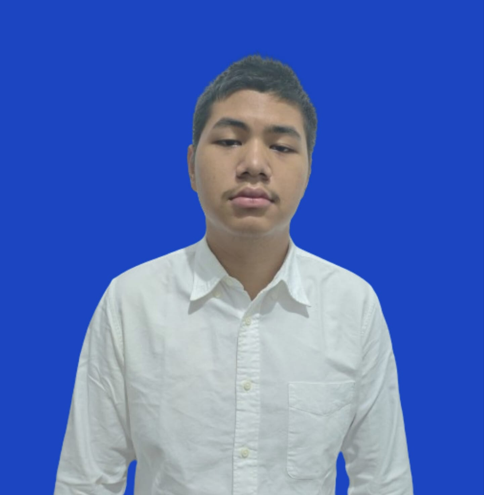
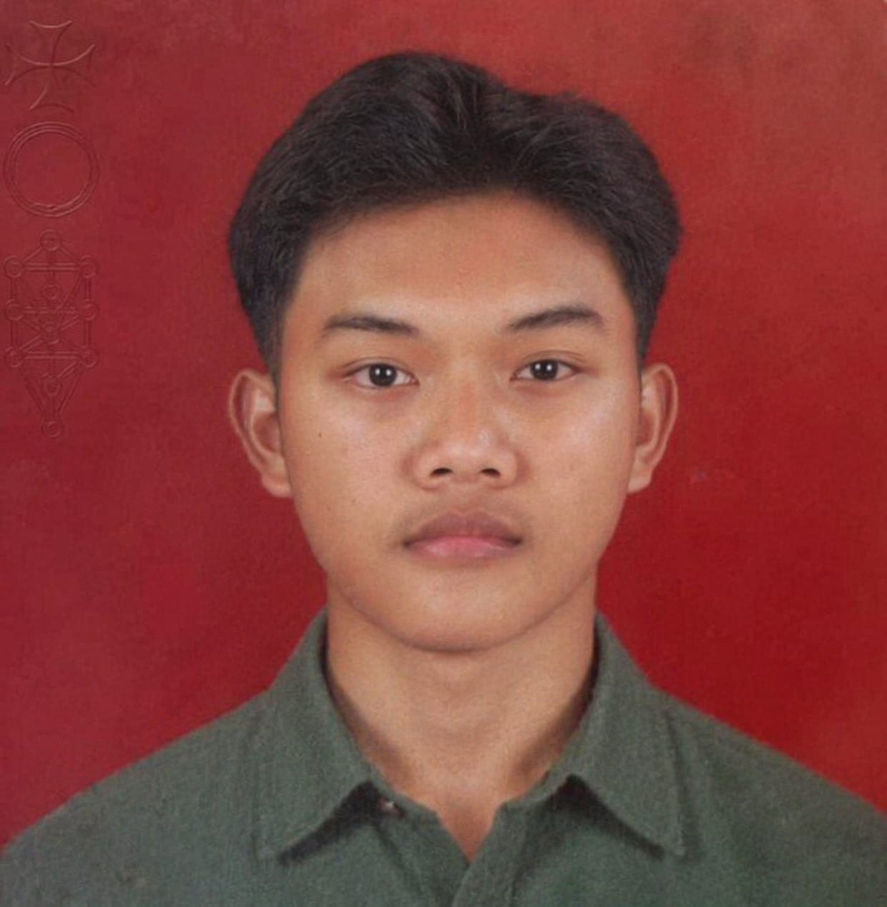
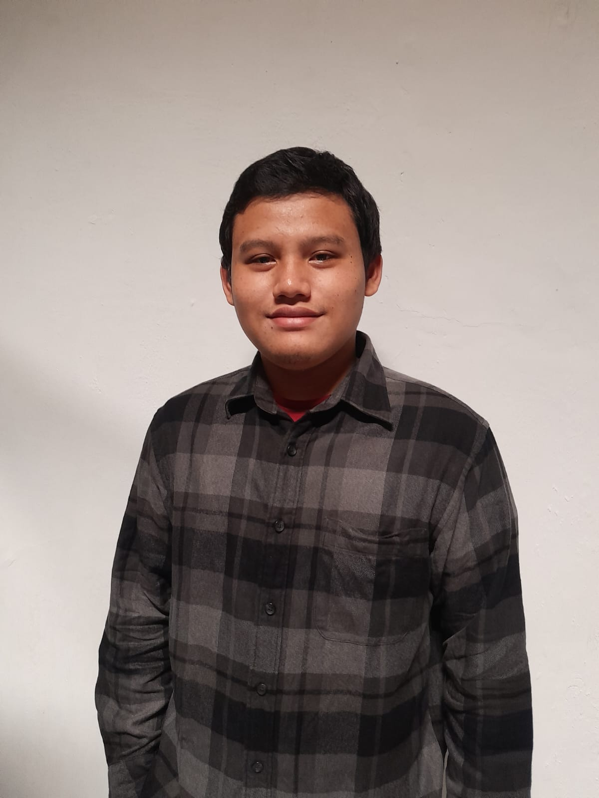

Puji dan syukur senantiasa kami panjatkan ke hadirat Tuhan Yang Maha Esa, karena atas rahmat dan karunianya proyek ini dapat terselesaikan dengan baik.
Kami mengucapkan terima kasih kepada orang tua dan para dosen yang telah memberikan dukungan, bimbingan, serta motivasi selama proses pengerjaan proyek ini.
Untuk memenuhi kewajiban kami sebagai mahasiswa CEP CCIT FTUI, kami membuat Academic Blog sebuah platform berbasis web menggunakan HTML dan CSS.

BBertanggung jawab dalam memastikan kualitas sistem, melakukan pengujian fungsionalitas, serta meminimalkan terjadinya bug atau error.

MFokus pada pengujian performa, analisis skenario penggunaan pengguna, serta memastikan sistem berjalan sesuai dengan kebutuhan spesifikasi.
Merancang dan membangun antarmuka web yang interaktif, responsif, dan dinamis menggunakan HTML, CSS, dan JavaScript.

HMengembangkan logika server backend serta mengintegrasikannya dengan antarmuka frontend agar seluruh aplikasi berjalan selaras, efisien, dan andal.